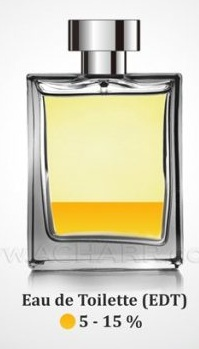
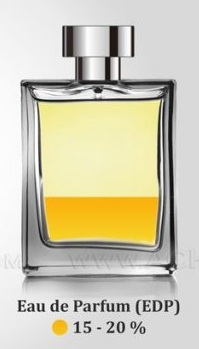
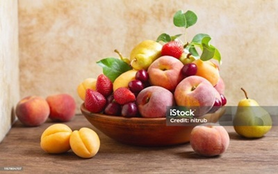
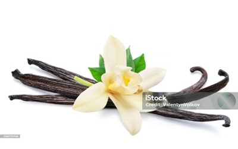

Often refered to as just Cologne, EDC with a 2-6% oil concentration usually lasts for 2 hours.
The oils in perfumes are diluted by alcohol and water, this is the determining factor of a
fragrance's longevity.
Eau De Toilette(EDT)
Generally best value for your buck, EDT with a 5-15% oil concentration
normally lasts for 2 to 4 hours. Because of the lower perfume oil concentration, EDT perfumes
that are supposedly the same
tend to smell differently to EDPs.


Eau De Parfum(EDP)
The most popular and preferred perfume type, EDP has a 15-20% oil concentration which makes it
the longest lasting at 4 to 5 hours. Certain fragrances could even last for days! Naturally is
it the most expensive out of the 3.
Thats not all
There are many more types of perfumes each with different perfume oil concentrations (Parfum, Eau
Fraiche etc) but these 3 are the most common ones that you would find on the market.
Types of scent families
Florals
Subfamilies: Pure floral, Soft floral, Fruity, Floral Amber
Clean and fresh smelling, this scent family is extremely popular during the summertime.
They are used more often in men's fragrances but can give a fragrance either masculine or feminine
characteristics.
Often used as base notes as they are strong, adding depth and longevity to the fragrance.
Woody notes are commonly paired with citric or floral notes as they are too overpowering on their
own.
Common notes: Sandalwood, Vetiver, Oud, Moss
Perfume Composition
Top Notes
Top notes are the opening of the perfume, the initial scent upon first spray of the perfume.
They are composed of light and volatile notes, lasting the shortest time from 5 to 30 minutes.
Example notes: Citrus fruits, Light florals, Green leaves
Middle Notes

Middle notes, also known as heart notes, come after the top notes evaporate. They form the core
of
the fragrance.
Richer and more complex than top notes, they can last for several hours.
Example notes: Fruity, Florals, Light woods
Base Notes

Base notes are the foundation of the fragrance, being the richest and heaviest note. This is
what
the perfume would smell like after drying down.